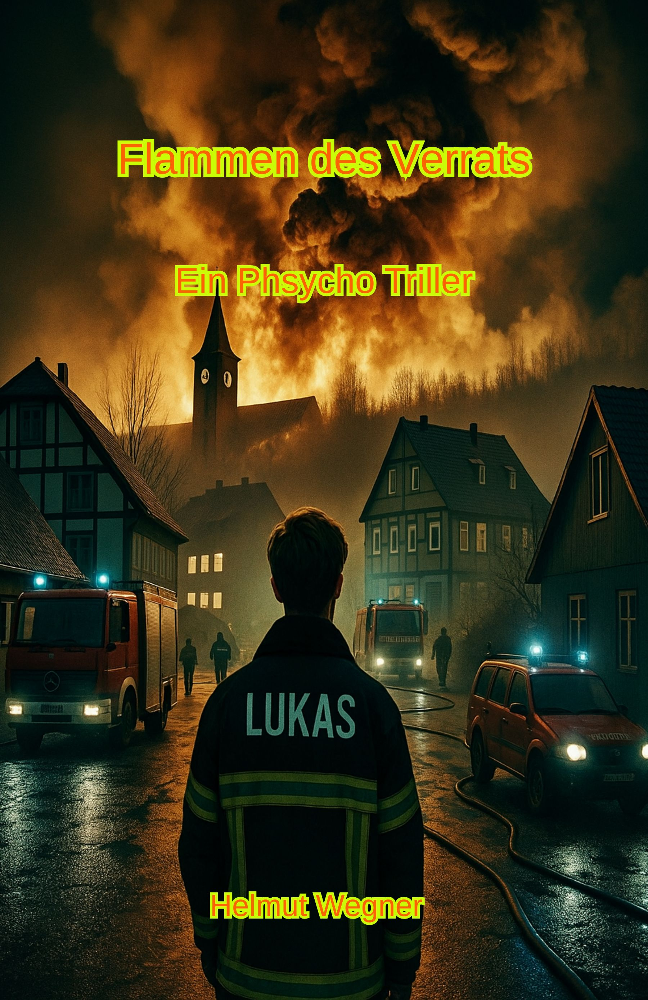

Psychologisch intensive Geschichten über menschliche Abgründe, Obsessionen und die dunklen Seiten der Seele
PSYCHO-THRILLER
Wenn die Grenze zwischen Helfer und Täter verschwimmt

Flammen des Verrats
Ein Psycho-Thriller über Obsession und Zerstörung
Lukas hatte sein Leben der Feuerwehr gewidmet, um Brände zu löschen und Leben zu retten. Doch eine dunkle Faszination für das Feuer wächst in ihm – eine gefährliche Obsession, die ihn dazu drängt, selbst Flammen zu entfachen.
Als Feuerwehrmann steht er an vorderster Front im Kampf gegen die Flammen, aber innerlich kämpft er gegen seine eigenen, zerstörerischen Impulse. Ein psychologisch intensiver Thriller über die schmale Grenze zwischen Retter und Täter, zwischen Kontrolle und Chaos.
Eine Geschichte über menschliche Abgründe, Schuld und die Macht der Versuchung, die niemanden kalt lassen wird.